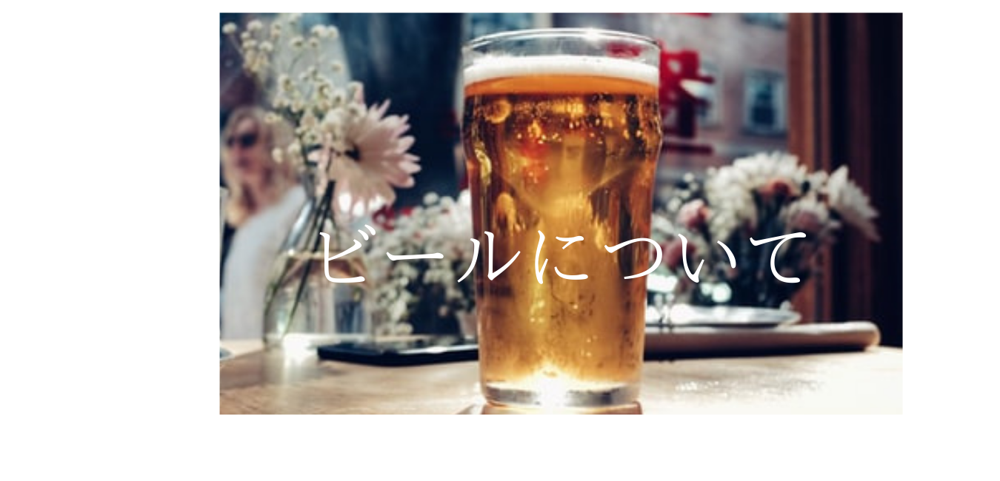
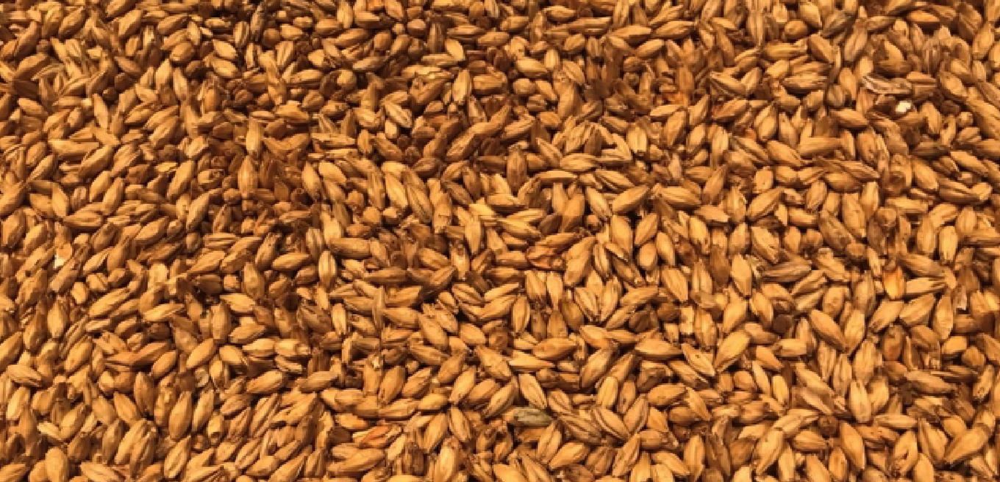
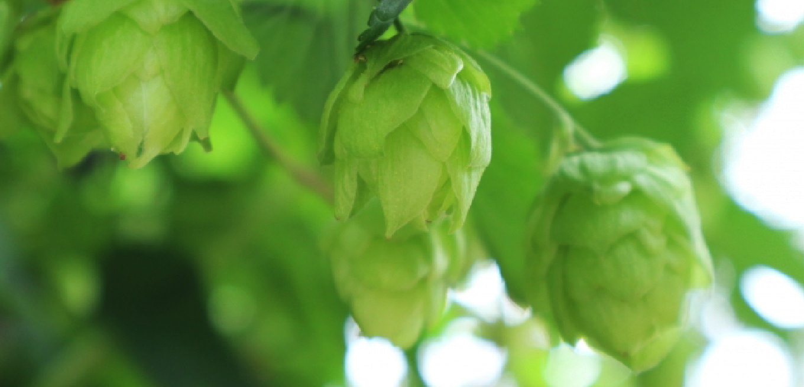
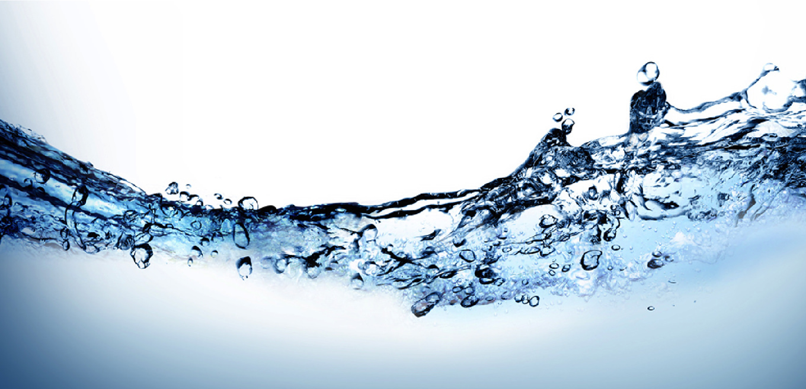
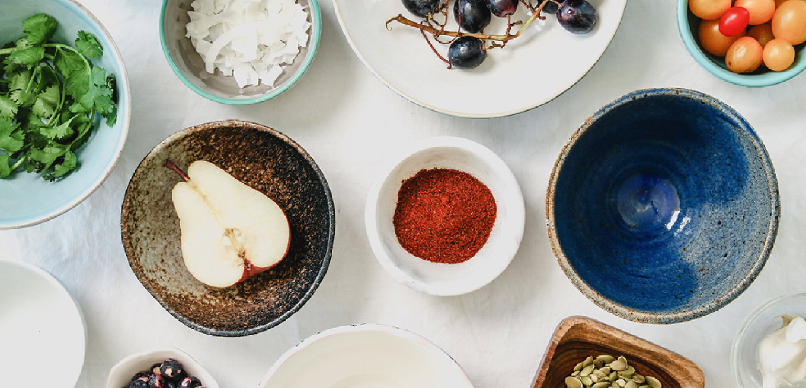
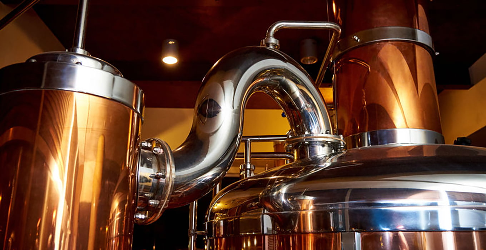
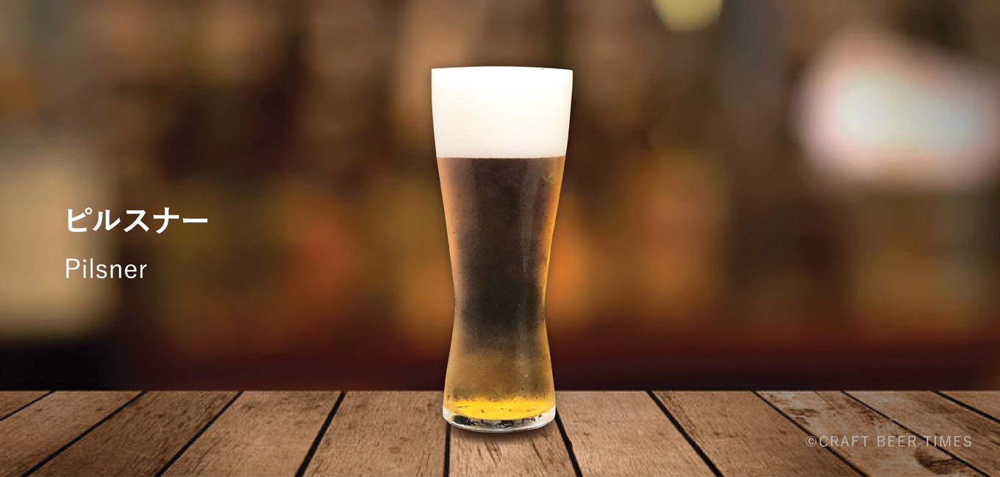
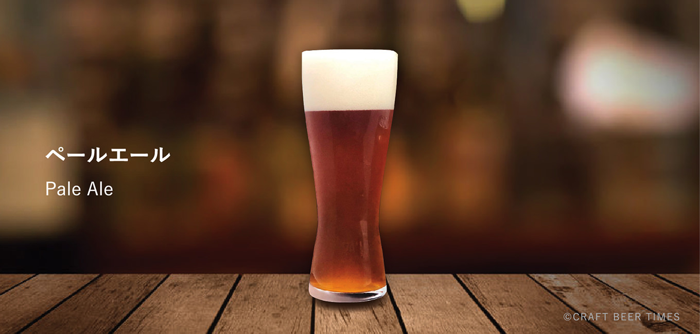

ビールはどのように作られているか？
ビールというお酒はどのようにつくられているものなのか、基礎的な知識を学んでいきましょう
ビールの原料や製造方法を知ってると、クラフトビールの多様な違いをより楽しむ事ができるようになります。
ビールの原料
ビールとは麦・ホップ・酵母・水を主に原料とした醸造酒です。
醸造酒とは、果実や穀物原料の糖分を酵母が食べることによってアルコールと炭酸ガスを発生させてできるお酒のことです。
下記のビールの原料についてそれぞれ解説します。
１麦芽（モルト）
２ホップ
３酵母
４水
５福原料
１ 麦芽 （モルト）

麦芽はビールのメインとなる原料です。
味や香り、泡持ちに影響を与えます。
麦芽とは、麦を発芽させたものです。モルトとも呼ばれます。
発芽した麦芽は、そのまま放っておくと麦芽が成長するために自らのデンプンを当分に変えて消費してしまいます。
そのため『焙燥』という麦芽を乾燥させる作業が行われます。
焙燥の温度によってモルトの色や風味は変化します。
麦芽をどの分量使うかによって、ビールの色や香り、糖分の量が変わるのです。
2 ホップ

ビールの魅力的な香りと苦味はこのホップによるものです。
ホップの中にある『ルプリン』という黄色いつぶつぶがの器官が、ビールに苦味や香りを与えます。
また、ホップには防腐効果や泡立ちを良くする効果もあります。
ホップは通常は収穫して乾燥したうちに、そのままの姿か、粉末にしてからペレット状（円筒状）に加工されたものがビール作りに使われます。
ビールに使われるホップの品種は１００種類以上あり、それぞれ香りや苦味の強さに個性があります。
ワインのぶとう品種のように、ホップの品種による違いがクラフトビールでは楽しまれます。
３ 酵母

ビールをお酒に変化させるのが酵母の力です。
麦芽の持つ当分を酵母がアルコールと二酸化炭素に分解し、その過程でさまざまな香り成分やその他の味わいを生み出します。
ビールの酵母は大きく分けてラガー酵母とエール酵母の２種類に分類されます。
ラガー酵母（下面発酵酵母）はスッキリと飲みやすいタイプのビールを造ります。
約４〜10度の低温下で活動し、酵母は発酵タンクの下の方で発酵します。
一方、エール酵母（上面発酵酵母）は香りが豊かで味わい深いビールを造ります。
約１３〜24度の中高音下で活動し、酵母は発酵タンクの上の方で発酵します。
このほかにも酵母には種類がたくさんあります。
南ドイツの白ビールに使われるバナナやグローブの香りを生むヴァイツェン酵母や、ベルギーの
ランビックに使われる自然界や醸造所に住みついいている野生酵母など、個性豊かな公募が存在します。
4 水

ビールのほとんどは水でできています。
そのため仕込み水の成分はビールの個性に大きな影響を与えます。
大事な要素葉水に含まれるカルシウムやマグネシウムなどのミネラルな豊富な水を硬水、少ない水を軟水といいます。
硬水で仕込まれたビールは、発酵が盛んに進み、ビールの味わいや色味が濃くなります。
一方、硬水仕込みのビールは、シャープで軽やかな味わいになります。
水質調整の技術が向上している近年では、ブルワーによって仕込み水の成分はビールに適したものに調整されます。
そのため、世界各地でさまざまなビールを造ることが可能になりました。
5 副原料

これまで説明してきた原料以外で、ビールの味わいや香りを特徴付けるために使われる原料です。
世界にはさまざまな原料を使ったビールがたくさんあります。
フルーツやチョコレート、ハーブなどをはじめとし、スパイス、茶葉、水、はちみつなどがあり、副原料を使った多様性に富んだ
ビールが日夜生まれています。
ビールの製造方法

ビール造りは複雑な工程をいくつもこなさなければなりません。
その工程をわずかに変えるだげでも仕上がりには大きな変化が生まれます。
1 麦芽粉砕
麦芽の持つデンプンを効率よく分解するために、麦芽をローラー式の粉砕機で細かくします。
2 糖化
粉砕した麦芽と仕込み水を大きな鍋に入れて煮込んでいきます。
適切な温度（５０〜７０度）で煮込むことで麦芽の持つ酸素が活性化し、麦芽のデンプンを糖分
に、タンパク質はアミノ酸へと分解していきます。
糖化が終わったら不純物取り除いて麦汁（ばくじゅう）を造ります。完成した麦汁の味は
とっても甘いです。
3 煮沸
きれいになった麦汁にホップを加えた煮沸していきます。
ホップは加熱することによって苦味を麦汁にもたらし、熱が加わらなければ香りを麦汁に与えます。
ホップには苦味付け用のものと、香り付け用のものがあるで、どのホップを、どのくらいの
時間、どのタイミングで投入するかはブリュワーの腕の見せ所です。
4 冷却
煮沸の終わった麦汁は冷却器を通って、不純物を取り除きながら発酵に適した温度まで下げられます。
5 発酵
酵母が麦汁に投入されると、いよいよ発酵が始まります。
酵母は麦汁内の糖分を消費してアルコールと炭酸ガスを発生させます。
そのほかにも酵母は麦汁の中にある様々な栄養分を使って、香りや旨味成分などを生み出します。
下面発酵酵母は10度程度前後で活動し、約７〜１０間ほど発行を続けます。
上面発行酵母は20度前後で活動し、３〜５日ほどで発行を終えます。
6 熟成
発行を終えたばかりのビールは荒々しい味わいのため、別タンクに移動し熟成させて味が落ち着かせます。
一般的に下面発行ビールは約1ヶ月、上面発行ビールは１〜２週間程寝かせます
7 ろ過・熱処理
熟成を終えたビールは、酵母の活動を止めるためにろ過または熱処理を加えます。
濾過をすることによってビールはクリアな色になります。
8 容器詰め
完成したビールを瓶や缶、樽に補充します。どの容器においても品質劣化の原因となる
酸素の混入を徹底的に防いで容器に詰められます。
ビアスタイルとは？主要な12種類
世界には数え切れないほどの様々なビールの種類がありますが、それを原料や製法、アルコール度数
などで分類したものを『ビアスタイル』と呼びます。
現在ビアスタイルの数は、なんと140種を超えるとされています。
ビアスタイルを知ることで、自分の好きなビールを探す事ができますし、飲んでいるビール
の製造方法や生まれた地にまで思いを馳せる事ができるようにもなります。
ここでは、その中でもクラフトビールの世界でよく見かける、特におさえておきたい主要な
ビアスタイルを１２種類ご紹介します！
ピルスナー

ラガービールを代表する世界で最も消費されているビアスタイルです。
澄んだ黄金色の液体とすっきりとした喉越しの良さから世界中から人気を集めています。
チェコのヒルゼン地区でドイツ人醸造家によって造られたスタイルです。
日本の大手ビールメーカーの主要銘柄もほとんどがこのピルスナーです。
ペールエール

イギリス発祥の上面発酵ビールを代表するスタイル。